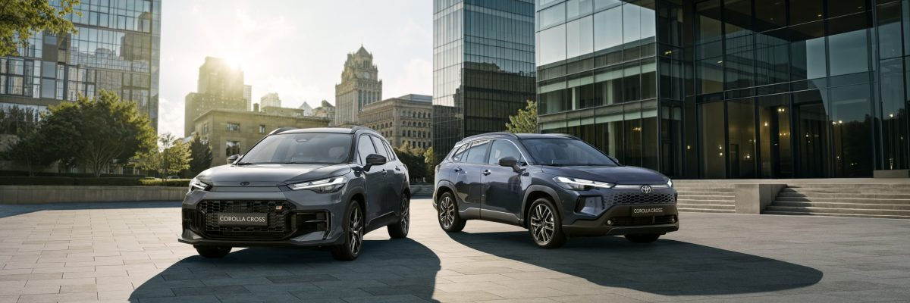
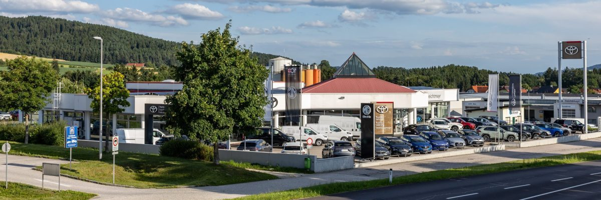
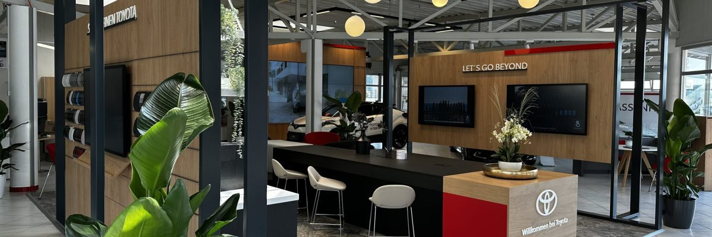
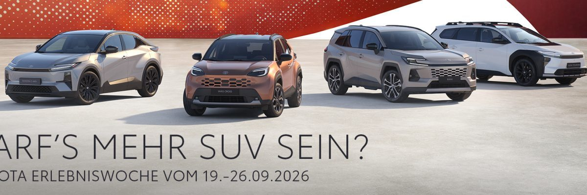
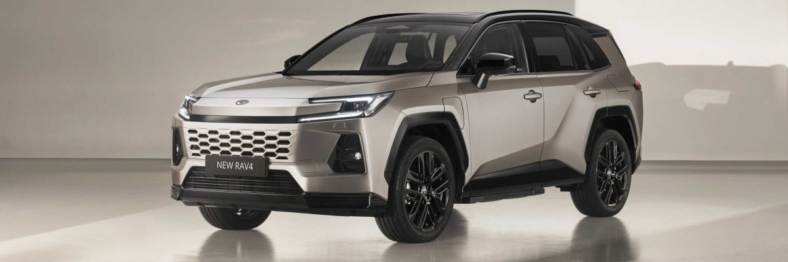
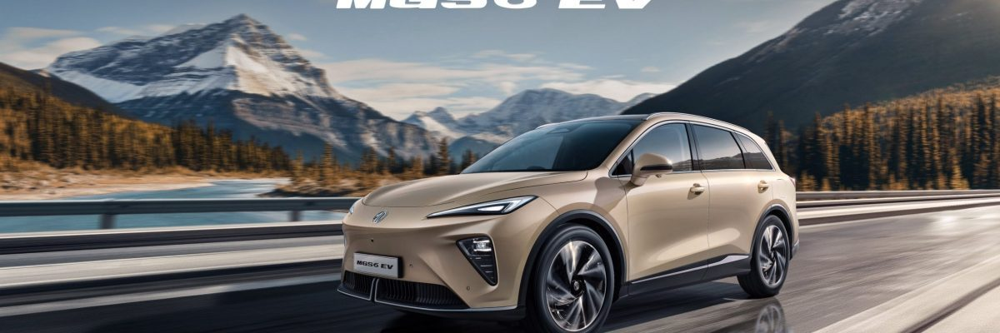
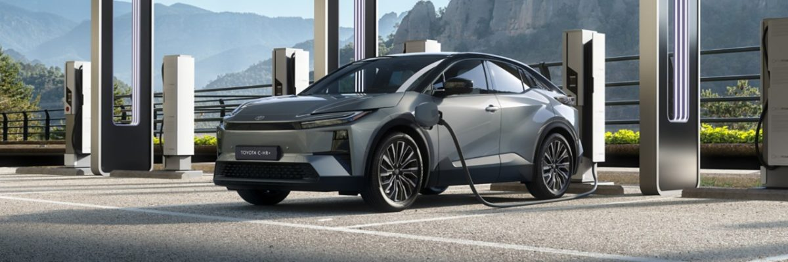

Seit 1890 · 4. Generation
Vom Hufbeschlag
zum Hypercharger
Was 1890 als Schmiede in St. Oswald begann, ist heute ein Autohaus mit zwei Standorten, 34 Mitarbeiterinnen und Mitarbeitern und rund 7.000 Kundinnen und Kunden.
Chronik
Vier Generationen Feichtmayr
Standort des Stammbetriebs: 4271 St. Oswald, Markt 39.
-
1890
Andreas Feichtmayr, geboren am 19.11.1861 in St. Oswald, gründet einen Gewerbebetrieb für „Hufbeschlag samt dem Recht zum Betrieb des Grob- und Wagenschmiedegewerbes“.
-
bis 1959
1. Nachfolger: Josef Feichtmayr, geboren am 3. Februar 1891, führt den Betrieb in dieser Art fort. Schmiede- und Schlosserarbeiten sind das Hauptbetätigungsfeld.
-
1960
2. Nachfolger: Karl Feichtmayr, geboren am 30. November 1930, übernimmt den Betrieb. Gewerbe: Schmiede und Schlosserei, Einzelhandel und Tankstellenbetrieb, Landmaschinenhandel und -reparatur, KFZ-Reparatur sämtlicher Marken.
-
1961 – 1990
Betriebsvergrößerungen in St. Oswald: KFZ-Werkstätte, Ersatzteillager, Schauraum, Spengler- und Lackieranlage.
-
15. Juni 1977
Vertragshändler im Bezirk Freistadt für die Marke Toyota.
-
17. Juni 1977
Erstes verkauftes Neufahrzeug der Firma Karl Feichtmayr: ein Toyota Corolla Sedan, 4-türig, 1.200 ccm, 50 PS.
-
1990 / 1991
3. Nachfolger: Karl Feichtmayr, geboren am 16. Februar 1962, übernimmt 1991 Betrieb und Geschäftsleitung. Im Juni 1990 erfolgt die Standorterweiterung nach Freistadt, Linzer Straße 65.
-
1999
Betriebsvergrößerung in Freistadt, Linzer Straße 65. Schwerpunkte: KFZ-Handel mit Neu- und Gebrauchtwagen, Service- und Reparaturfachwerkstätte, Spenglerei und Lackierfachbetrieb, Leihwagenservice.
-
2007
4. Nachfolger: Daniel Feichtmayr, geboren am 17. August 1988, ist seit 01.01.2007 im Betrieb Freistadt tätig. Als Geschäftsführer verantwortet er MG Motors, Einkauf und Verkauf Neuwagen, Werbung, Organisation sowie Gebrauchtwagen-Ein- und -Verkauf.
-
2015
Gründung des „Gebrauchtwagen-Zentrums Feichtmayr“ im Betrieb Freistadt: Handel mit Gebrauchtfahrzeugen aller Marken sowie Service, Reparatur, Spenglerei und Lackierarbeiten.
-
2020 – 2024
Markenhändler für Toyota Crosscamp.
-
2021
Markenhändler für MG Motors — Elektrofahrzeuge, Plug-in-Fahrzeuge, Vollhybride und Verbrenner.
-
2022
Jubiläum: 45 Jahre Toyota Feichtmayr. Zuvor gefeiert wurden 25, 30, 35 (1977 – 2012) und 40 Jahre Toyota Feichtmayr.
-
2024
Die neu gestaltete Schauraumgestaltung im Betrieb Freistadt wird abgeschlossen — mit Kundenlounge und Touch-TV-Technik zur Fahrzeugkonfiguration.

Der Betrieb in Zahlen
- Beschäftigte34 Mitarbeiter
- Ausbildunglaufend Lehrlinge
- Kundenstockca. 7.000 Kunden
- StandorteFreistadt, St. Oswald
Schwerpunkte heute
- KFZ-Handel (Neu- und Gebrauchtwagen)
- Service- und Reparaturfachwerkstätte
- Spenglerei und Lackierfachbetrieb
- Leihwagenservice
Team
Wer Sie betreut
Standort Freistadt
Karl Feichtmayr
Geschäftsleitung & Eigentümer
Daniel Feichtmayr
Geschäftsführer, Marketing, MG-Leitung
Manuel Denk
Verkaufsberater Neu- & Gebrauchtwagen
Peter Mascher
Verkaufsberater Neu- & Gebrauchtwagen
Alexander Ahorner
Meister, Service & Reparaturannahme, Ersatzteile und Zubehör
Dominik Wurm
Service & Reparaturannahme, Ersatzteile und Zubehör, MG-Reparaturannahme
Sandra Zeilinger
Kundendienstberaterin / Ersatzteillager
Standort St. Oswald
Josef Kastler
Werkstattleitung, Service & Reparaturannahme, Ersatzteile
Reinhard Victora
Meister, Service & Reparaturannahme, Ersatzteile
Galerie
Ein Blick auf den Betrieb
Schauraum, Aktionen und Modelle — Aufnahmen aus dem Autohaus Feichtmayr.






Karriere
Lehre und Arbeit im Autohaus
Die Ausbildung von Lehrlingen gehört seit Jahrzehnten zum Betrieb — heute arbeiten 34 Menschen an den Standorten Freistadt und St. Oswald in Verkauf, Werkstatt, Spenglerei, Lackiererei, Ersatzteillager und Büro.
Offene Stellen und Lehrplätze besprechen wir am liebsten persönlich. Schicken Sie uns eine Initiativbewerbung — wir melden uns.
- KFZ-Technik: Service, Diagnose, Hochvolt-Technik
- Karosseriebautechnik: Spenglerei und Lackiererei
- Verkauf und Kundendienstberatung
- Büro, Rechnungswesen und Ersatzteillager